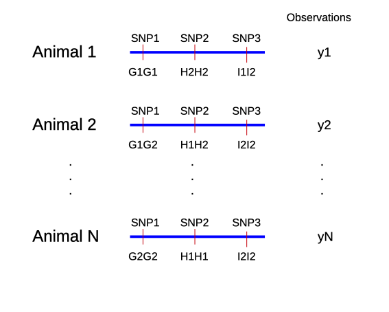
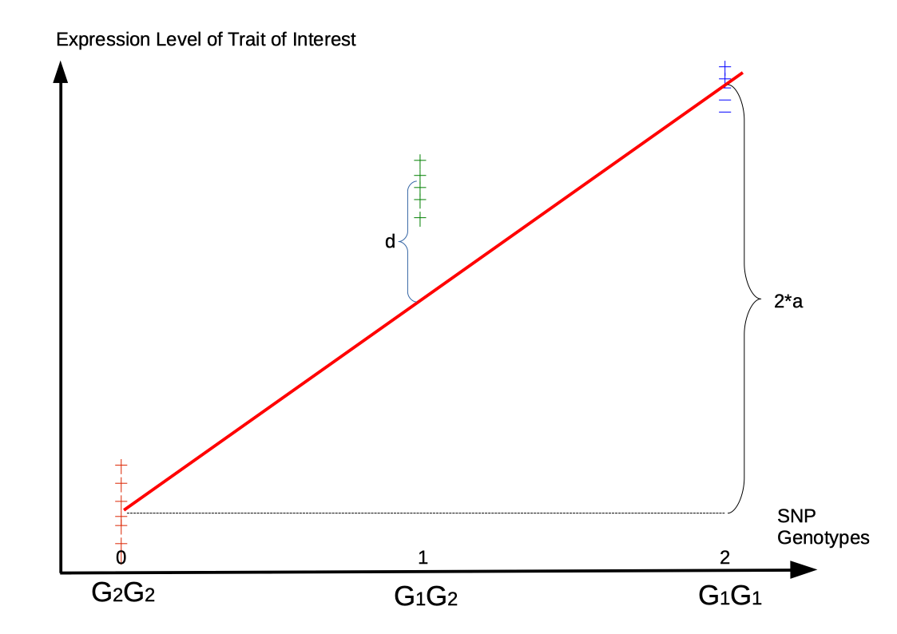

| Animal | BC | Body Weight | BCS | HEI | Breed |
|---|---|---|---|---|---|
| 1 | 176 | 471 | 5.0 | 161 | Angus |
| 2 | 177 | 463 | 4.2 | 121 | Angus |
| 3 | 178 | 481 | 4.9 | 157 | Simmental |
| 4 | 179 | 470 | 3.0 | 165 | Angus |
| 5 | 179 | 496 | 6.8 | 136 | Simmental |
| 6 | 180 | 491 | 4.9 | 123 | Simmental |
| 7 | 181 | 518 | 4.4 | 163 | Limousin |
| 8 | 182 | 511 | 4.4 | 149 | Limousin |
| 9 | 183 | 510 | 3.5 | 143 | Limousin |
| 10 | 184 | 541 | 4.7 | 130 | Limousin |
Fixed Linear Effects Models
Extension of Dataset on Body Weight
Include Breed into Model
- Breed has an influence on body weight
- Predictor variables must be numeric
- Breed must be converted to numeric code
- Assignment of codes to breeds is rather arbitrary
Breed Codes
| Code | Breed |
|---|---|
| 1 | Angus |
| 2 | Limousin |
| 3 | Simmental |
In R: Encoding based on alpha-numeric order of factor names
levels(as.factor(tbl_flem$Breed))[1] "Angus" "Limousin" "Simmental"as.integer(as.factor(tbl_flem$Breed)) [1] 1 1 3 1 3 3 2 2 2 2Dataset with Breed Codes
| Animal | Body Weight | Breed | Breed Code |
|---|---|---|---|
| 1 | 471 | Angus | 1 |
| 2 | 463 | Angus | 1 |
| 3 | 481 | Simmental | 3 |
| 4 | 470 | Angus | 1 |
| 5 | 496 | Simmental | 3 |
| 6 | 491 | Simmental | 3 |
| 7 | 518 | Limousin | 2 |
| 8 | 511 | Limousin | 2 |
| 9 | 510 | Limousin | 2 |
| 10 | 541 | Limousin | 2 |
Modelling Effect of Breed
- Simplification: “breed” is the only predictor
- Take breed code of animal \(i\) as the predictor value \(x_i\)
- Expected body weight (\(y_i\)) for animal \(i\)
\[E(y_i) = b_0 + b_1 x_i\]
Problems
- Nothing wrong with previous model
- But the following relations might give a hint to some problems
\[\begin{equation} \left. \begin{array}{l} \text{Animal i of breed Angus} \\ \text{Animal j of breed Limousin} \\ \text{Animal k of breed Simmental} \end{array} \right\} \rightarrow \left\{ \begin{array}{l} E(y_i) = b_0 + b_1 * 1 \\ E(y_j) = b_0 + b_1 * 2 \\ E(y_k) = b_0 + b_1 * 3 \\ \end{array} \right. \notag \end{equation}\]
This means, for expected differences between body weights of animals of different breeds
\[\begin{align} E(y_j) - E(y_i) &= E(y_k) - E(y_j) = b_1 \notag \\ E(y_k) - E(y_i) &= 2 * b_1 \notag \end{align}\]
Consequences
- Allocation of numerical codes imposes relations between expected values
- Relations might be unreasonable
- Regression analysis only yields estimates for \(b_0\) and \(b_1\), effects of other breeds are determined
- Conclusion: regression on numerical codes of discrete variables are in most cases unreasonable
- Exception: Estimation of marker effects
Linear Regression Analysis for Genomic Data

Marker Effect Estimation
- Assume: marker and QTL are very close, such they can no longer be distinguished
- Fit regression of observations (y) on marker genotypes of locus \(G\)
- Assume \(G_1\) is the allele with a positive effect on observed trait
- Use the following encoding of marker genotypes to numeric values
| Genotype | Code |
|---|---|
| \(G_1G_1\) | 2 |
| \(G_1G_2\) | 1 |
| \(G_2G_2\) | 0 |
\(\rightarrow\) Biological meaning of genotype code: count number of \(G_1\) alleles
Genomic Regression

Model Fit
- Take only homozygous genotypes \(G_1G1\) and \(G_2G_2\) from dataset
- Why only homozygotes? Look at extreme values for \(d\) with over- and under-dominance
- Fit regression line and compute marker effect \(a\)
- Shift \(x\)- axis, such that homozygotes have values \(-a\) and \(a\)
- Compute \(d\) as deviation of heterozygotes from \(0\)